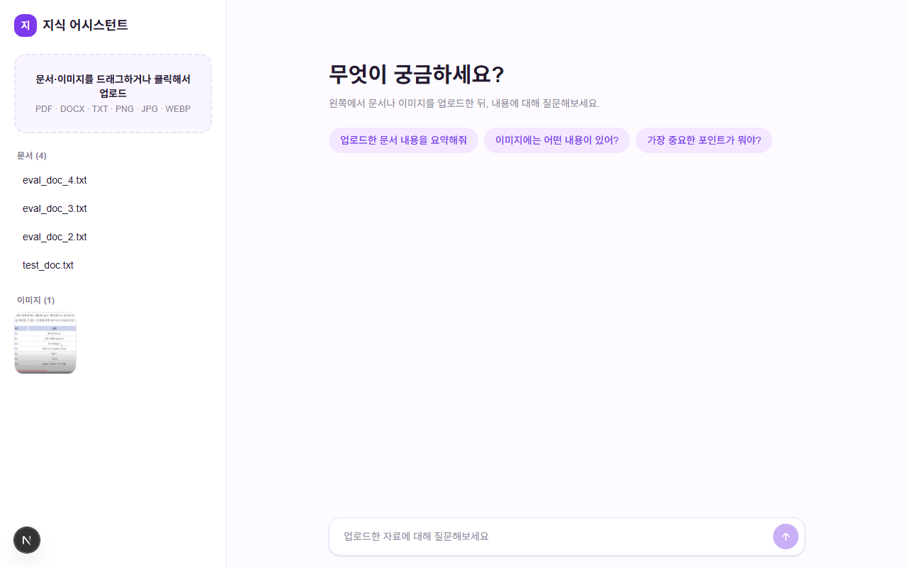
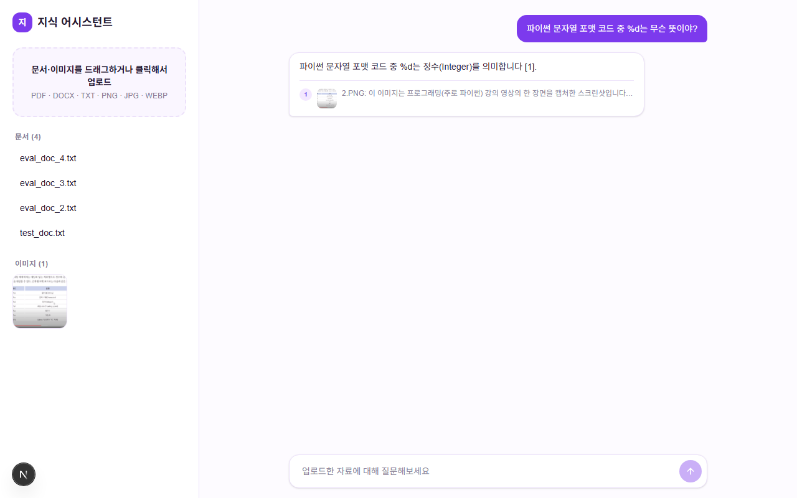

PROJECT · knowledge-assistant
멀티모달 지식 어시스턴트 (RAG)
기획·설계부터 RAG 구현, 실제 웹 배포·트러블슈팅까지 전 과정을 진행한 개인 프로젝트

개요
기존에 만든 프로젝트들(법률상담 AI, 피부질환 분류기 등)을 되짚어보다가 한 가지 공백을 발견했습니다 — RAG(검색 증강 생성)를 이론으로는 정리해뒀지만 실제로 코드로 구현해본 적이 한 번도 없었습니다. 이 프로젝트는 그 공백을 메우기 위해 기획 단계부터 하이브리드 검색, 재순위화, 인용 기반 답변 생성까지 실제로 동작하는 RAG 파이프라인을 만들고, 로컬 데모에 그치지 않고 Vercel·Render에 실제로 배포해 지금도 접속 가능한 서비스로 완성한 결과물입니다.
진행 과정
- 과거 프로젝트 분석 → 방향 설정 — 그동안 만든 프로젝트들을 돌아보니, 파인튜닝·비전· 풀스택 경험은 있는데 RAG를 실제로 구현해본 적이 없다는 걸 깨달았습니다. 그래서 "문서+이미지를 하나의 검색 공간에서 다루는 멀티모달 지식 어시스턴트"로 방향을 잡았습니다.
- 아키텍처 먼저, 구현은 그다음 — 코드를 바로 짜지 않고 먼저 아키텍처(청킹 → 임베딩 → 하이브리드 검색 → 재순위화 → 인용 기반 생성)를 정리해 검토한 뒤, 스캐폴딩부터 문서/이미지 파이프라인, 검색, 답변 생성, 프론트엔드 채팅 UI까지 단계별로 나눠 구현했습니다.
- 실제 API로 라이브 검증 — Gemini API 키와 Supabase 프로젝트를 연결한 뒤, 실제 문서·이미지를 업로드해 질문-답변까지 전체 흐름을 직접 돌려보며 코드만으로는 드러나지 않는 문제들 (모델명 변경, 임베딩 차원, 프론트엔드 레이아웃 버그)을 그 자리에서 고쳤습니다.
- Vercel·Render 실배포와 트러블슈팅 — 로컬에서 잘 되던 것과 실제 배포 환경은 또 다른 문제였습니다. 아래 표에 정리한 배포 이슈들을 하나씩 겪고 고치며 지금 접속 가능한 데모까지 완성했습니다.
- 레퍼런스 기반 UI 리디자인 — 배포 후 "UI가 별로다"는 피드백을 받고, 직접 디자인을 창작하는 대신 T3.chat 같은 실제 서비스의 디자인 언어(둥근 필 버튼, 단색 강조색, 넉넉한 여백)를 참고해 바이올렛 톤의 심플하고 컬러감 있는 UI로 다시 짰습니다.
RAG 파이프라인 — 실제로 어떻게 동작하는가
이 프로젝트의 핵심은 "LLM에 검색 기능이 내장된 것"이 아니라, LLM을 호출하기 전에 직접 만든 검색 단계가 프롬프트에 근거를 끼워 넣는 것입니다. Gemini는 최종적으로 하나의 긴 텍스트 프롬프트만 받을 뿐, 그 안의 문맥이 벡터 검색으로 찾아온 것인지 전혀 구분하지 못합니다.
- 하이브리드 검색 — 질문을 임베딩해 Supabase pgvector로 의미 검색을 하는 동시에, Postgres 풀텍스트 검색으로 키워드 검색도 함께 돌립니다.
- RRF 병합 + LLM 재순위화 — 두 검색 결과를 Reciprocal Rank Fusion으로 합친 뒤, Gemini에게 후보 목록을 다시 보여주고 관련도 순으로 골라달라고 요청합니다.
- 이미지 → 텍스트 브릿지 — 업로드된 이미지는 Gemini Vision이 상세 캡션을 생성하고, 그 캡션을 문서 청크와 동일한 벡터 공간에 저장합니다. 그 결과 텍스트 질문으로 이미지 안의 내용까지 검색되고 인용됩니다.
def stream_answer(self, question: str, context_blocks: list[str]) -> Iterator[str]:
context = "\n\n".join(
f"[{i + 1}] {block}" for i, block in enumerate(context_blocks)
)
prompt = f"{ANSWER_SYSTEM_PROMPT}\n\n--- 근거 ---\n{context}\n\n--- 질문 ---\n{question}"
response = self._client.models.generate_content(
model=self._model,
contents=prompt,
)
context_blocks는 Gemini API가 알려준 게 아니라, 우리 Supabase
벡터DB에서 직접 검색해 온 값입니다. 이 단계가 없었다면 Gemini는 사용자가 업로드한 문서나
이미지의 존재 자체를 몰랐을 것입니다.

배포 중 실제로 겪은 문제와 해결
| 증상 | 원인 | 대응 |
|---|---|---|
| Render 배포가 포트 바인딩 타임아웃으로 계속 실패 | 로컬 재순위화용 sentence-transformers/torch가 무료 플랜
512MB 메모리에 비해 너무 무거움 |
로컬 cross-encoder를 제거하고, Gemini에게 후보를 다시 보여줘 재순위화시키는 방식으로 교체 (무거운 의존성 자체를 삭제) |
같은 원인으로 빌드 자체가 실패 (pydantic-core 빌드 에러) |
Render 기본 Python 3.14용 사전 빌드 wheel이 아직 없어 소스 빌드를 시도하다 실패 | PYTHON_VERSION을 3.12로 고정해 안정적인 wheel을 쓰도록 함 |
| 채팅 요청이 응답 없이 계속 멈춰있음 | 처음엔 스트리밍/프록시 버퍼링 문제로 의심했으나, 실제로는 Gemini 무료 티어의 모델별 일일 할당량(하루 20회)을 테스트하며 소진한 것 (429 오류가 재시도되며 오래 걸림) | 할당량이 더 넉넉한 gemini-flash-lite-latest로 교체하고,
로그를 직접 읽어 진짜 원인을 재확인 |
| 프론트 배포 후 백엔드 URL이 예측과 다름 | Render 서비스 이름이 전역으로 겹쳐 임의 접미사가 붙음 | 실제 배포 로그에서 URL을 확인해 Vercel 환경변수를 재설정 후 재배포 |
검색 정확도 평가
레시피·역사·과학·프로젝트 설명·이미지 등 서로 다른 주제의 문서/이미지로 평가셋을 만들고, 실제 검색 파이프라인을 호출해 기대하는 근거가 top-5 안에 들어오는지 확인하는 스크립트를 작성했습니다. 결과는 Hit@5 8/8(100%), MRR 0.94 — 서로 다른 5개 자료를 정확히 구분해 찾아냅니다. (코퍼스가 작아 100%가 비교적 쉽게 나오는 조건이라는 점은 참고용으로 코드에도 남겨뒀습니다.)
느낀 점
이 프로젝트에서 가장 크게 배운 건 기술 자체보다 계획 → 구현 → 검증 → 배포를 순서대로 제대로 밟으면 실제 서비스가 나온다는 확인이었습니다. 코드를 먼저 짜지 않고 아키텍처부터 정리한 다음 단계별로 구현했고, 다 만든 뒤에도 로컬 테스트만으로 끝내지 않고 실제 API 키· 실제 배포 환경까지 밀어붙이면서 코드만 봐서는 절대 안 보였을 문제들(모델 지원 종료, 메모리 제약, 할당량, URL 충돌)을 직접 겪고 고쳤습니다. RAG를 "이론으로 안다"와 "직접 만들어서 배포해봤다" 사이의 간극을 이번에 메웠습니다.